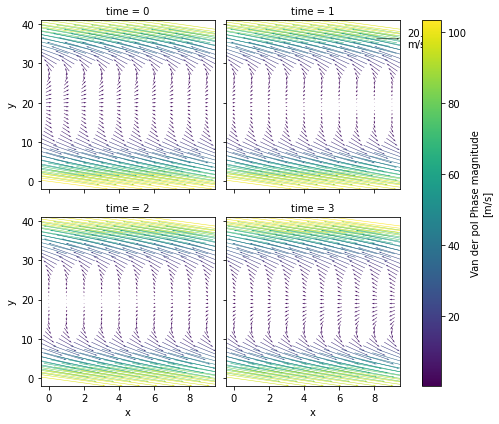
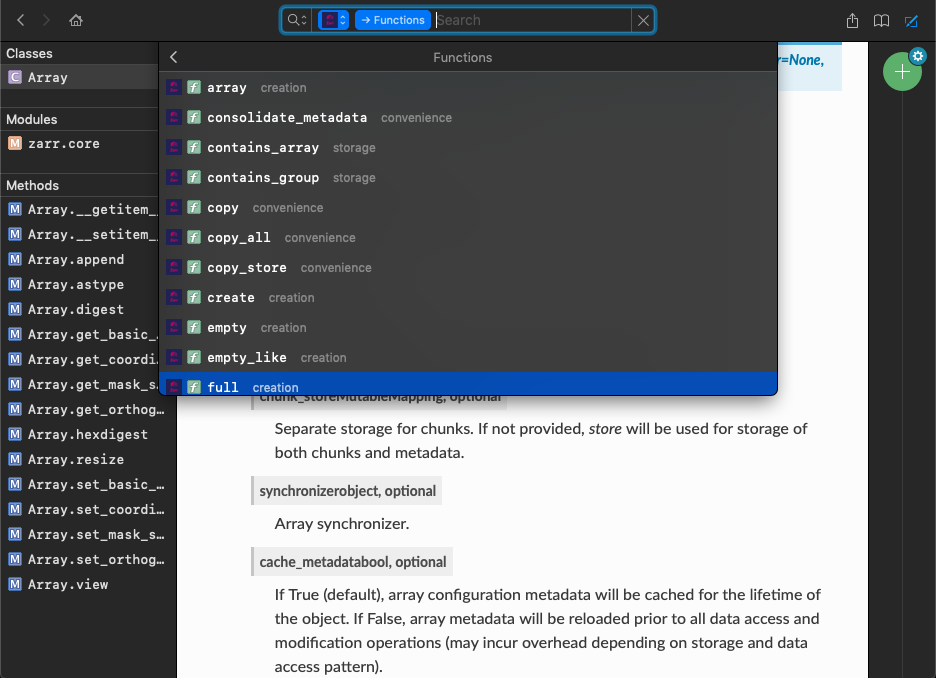

Posts tagged python
Dictionary Merge and Update Operators in Python 3.9
- 04 June 2021
When it comes to merging two dictinaries in Python, I find myself googling “how to merge two dictionaries” very often. Every time I land on this StackOverflow answer. This answers recommends using the dictionary unpacking feature:
🚀 Xarray v0.17.0 is here!
- 26 February 2021
The new version of xarray comes with plenty of bug fixes and support for a number of great new features. In this post, I am going to discuss some of the new features I am most excited about.
Advent of Code - Day 9: Encoding Error
- 09 December 2020
With your neighbor happily enjoying their video game, you turn your attention to an open data port on the little screen in the seat in front of you.
Advent of Code - Day 8: Handheld Halting
- 08 December 2020
Your flight to the major airline hub reaches cruising altitude without incident. While you consider checking the in-flight menu for one of those drinks that come with a little umbrella, you are interrupted by the kid sitting next to you.
Advent of Code - Day 7: Handy Haversacks
- 07 December 2020
You land at the regional airport in time for your next flight. In fact, it looks like you’ll even have time to grab some food: all flights are currently delayed due to issues in luggage processing.
Advent of Code - Day 6: Custom Customs
- 06 December 2020
As your flight approaches the regional airport where you’ll switch to a much larger plane, customs declaration forms are distributed to the passengers.
Advent of Code - Day 5: Binary Boarding
- 05 December 2020
You board your plane only to discover a new problem: you dropped your boarding pass! You aren’t sure which seat is yours, and all of the flight attendants are busy with the flood of people that suddenly made it through passport control.
Advent of Code - Day 4: Passport Processing
- 04 December 2020
You arrive at the airport only to realize that you grabbed your North Pole Credentials instead of your passport. While these documents are extremely similar, North Pole Credentials aren’t issued by a country and therefore aren’t actually valid documentation for travel in most of the world.
Advent of Code - Day 3: Toboggan Trajectory
- 03 December 2020
With the toboggan login problems resolved, you set off toward the airport. While travel by toboggan might be easy, it’s certainly not safe: there’s very minimal steering and the area is covered in trees. You’ll need to see which angles will take you near the fewest trees.
Advent of Code - Day 2: Password Philosophy
- 02 December 2020
Your flight departs in a few days from the coastal airport; the easiest way down to the coast from here is via toboggan.
Advent of Code - Day 1: Report Repair
- 01 December 2020
After saving Christmas five years in a row, you’ve decided to take a vacation at a nice resort on a tropical island. Surely, Christmas will go on without you.
A Knitting Weekend with Dash and Python
- 21 January 2020
For the last few months, I’ve become a huge fan of the quiet weekend, the weekend when no plan is the plan, and you are in no hurry at all. I woke up on Saturday morning, and I decided that this weekend was going to be a quiet one. After watching a late morning football game from the English Premier League – yup, I refuse to call it soccer 😀 – I decided to write some code-nothing big, just a few lines of codes to improve my experience with Dash, a tool that I’ve been using for a few months.
